공조냉동기계산업기사 (2019-03-03 기출문제)
1과목: 공기조화
1. 원심송풍기에서 사용되는 풍량제어 방법 중 풍량과 소요동력 과의 관계에서 가장 효과적인 제어방법은?
- 회전수제어
- 베인제어
- 댐퍼제어
- 스크롤 댐퍼 제어
(정답률: 80%)

2. 다음 중 제올라이트(zeolite)를 이용한 제습방법은 어느것인가?
- 냉각식
- 흡착식
- 흡수식
- 압축식
(정답률: 72%)
3. 습공기선도상에 나타나 있지 않은 것은?
- 상대습도
- 건구온도
- 절대습도
- 포화도
(정답률: 79%)
4. 난방부하는 어떤 기기의 용량을 결정하는데 기초가 되는가?
- 공조장치의 공기냉각기
- 공조장치의 공기가열기
- 공조장치의 수액기
- 열원설비의 냉각탑
(정답률: 81%)
5. 난방방식과 열매체의 연결이 틀린것은?
- 개별 스토브 - 공기
- 온풍 난방 - 공기
- 가열 코일 난방 – 공기
- 저온 복사 난방 - 공기
(정답률: 72%)
6. 기류 및 주위벽면에서의 복사열은 무시하고 온도와 습도만으로 쾌적도를 나타내는 지표를 무엇이라 하는가?
- 퀘적 건강지표
- 불쾌지수
- 유효온도지수
- 청정지표
(정답률: 86%)
7. 실내 냉방 부하 중에서 현열부하 2500 kcal/h, 잠열부하 500 kcal/h 일 때 현열비는?
- 0.2
- 0.83
- 1
- 1.2
(정답률: 73%)
8. 극간풍의 풍량을 계산하는 방법으로 틀린것은?
- 환기 횟수에 읜한 방법
- 극간 길이에 의한 방법
- 창 면적에 의한 방법
- 재실인원수에 의한 방법
(정답률: 79%)
9. 그림에서 공기조화기를 통과하는 유입공기가 냉각코일을 지날 때의 상태를 나타낸 것은?
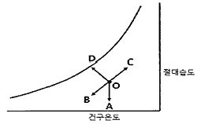
- OA
- OB
- OC
- OD
(정답률: 81%)
10. 복사난방의 특징에 대한 설명으로 틀린 것은?
- 외기온도 변화에 따라 실내의 온도 및 습도조절이 쉽다
- 방열기가 불필요하므로 가구배치가 용이하다
- 실내의 온도분포가 균등하다
- 복사열에 의한 난방이므로 쾌감도가 크다
(정답률: 78%)
11. 공기조화방식에서 수-공기방식의 특징에 대한 설명으로 틀린것은?
- 전공기방식에 비해 반송동력이 많다.
- 유닛에 고성능 필터를 사용할 수가 없다.
- 부하가 큰 방에 대해 덕트의 치수가 적어질 수 있다.
- 사무실, 병원, 호텔 등 다실 건물에서 외부 존은 수방식, 내부 존은 공기방식으로 하는 경우가 많다.
(정답률: 58%)
12. 다음 중 히트펌프 방식의 열원에 해당되지 않는것은?
- 수 열원
- 마찰 열원
- 공기 열원
- 태양 열원
(정답률: 72%)
13. 송풍기의 법칙 중 틀린 것은? (단, 각각의 값은 아래 표와 갔다.)
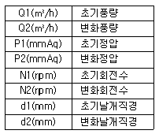
- Q2=(N2/N1)xQ1
- Q2=(d2/d1)3×Q1
- P2=(N2/N1)3×P1
- P2=(d2/d1)2×P1
(정답률: 70%)
14. 냉수 코일 설계 시 유의사항으로 옳은 것은?
- 대수 평균 온도차(MTD)를 크게 하면 코일의 열수가 많아진다.
- 냉수의 속도는 2m/s 이상으로 하는 것이 바람직하다.
- 코일을 통과하는 풍속은 2~3m/s가 경제적이다.
- 물의 온도 상승은 일반적으로 15℃ 전후로 한다.
(정답률: 76%)
15. 다음 그림의 난방 설계도에서 콘벡터(Convector)의 표시 중 F가 가진 의미는?
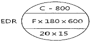
- 케이싱 길이
- 높이
- 형식
- 방열면적
(정답률: 81%)
16. 공기조화 냉방 부하 계산 시 잠열을 고려하지 않아도 되는 경우는?
- 인체에서의 발생열
- 문틈에서의 틈새바람
- 외기의 도입으로 인한 열량
- 유리를 통과하는 복사열
(정답률: 74%)
17. 공기 중에 분진의 미립자 제거뿐만 아니라 세균, 곰팡이, 바이러스 등 까지 극소로 제한시킨 시설로서 병원의 수술실, 식품가공, 제액 공장 등의 특정한 공정이나 유전자 관련 산업 등에 응용되는 설비는?
- 세정실
- 산업용 클린룸(ICR)
- 바이오 클린룸(BCR)
- 칼로리미터
(정답률: 86%)
18. 실내온도25℃이고, 실내 절대습도가 0.0165kg/kg의 조건에서 틈새바람에 의한 침입 외기량이 200L/s일 때 현열부하와 잠열부하는? (단, 실외온도 35℃, 실외 절대습도0.0321kg/kg, 공기의 비열 1.01kJ/kg·K, 물의 증발잠열 2501 kJ/kg 이다.)
- 현열부하 2.424kW, 잠열부하 7.803kW
- 현열부하 2.424kW, 잠열부하 9.364kW
- 현열부하 2.828kW, 잠열부하 7.803kW
- 현열부하 2.828kW, 잠열부하 9.364kW
(정답률: 64%)
19. 건구온도30℃, 상대습도60%인 습공기에서 건공기의 분압(mmHg)는? (단, 대기압은 760mmHg, 포화 수증기압은 27.65mmHg 이다)
- 27.65
- 376.21
- 743.41
- 700.97
(정답률: 52%)
20. 다음 중 보일러의 열효율을 향상시키기 위한 장치가 아닌 것은?
- 저수위 차단기
- 재열기
- 절탄기
- 과열기
(정답률: 75%)
2과목: 냉동공학
21. 단위에 대한 설명으로 틀린 것은?
- 열의 일당량은 427kg·m/kcal 이다
- 1 kcal는 약 4.2kJ이다.
- 1 kWh는 760 kcal 이다.
- ℃=5(℉-32)/9 이다.
(정답률: 77%)
22. 냉동기 윤활유의 구비조건으로 틀린 것은?
- 저온에서 응고하지 않고 왁스를 석출하지 않을 것
- 인화점이 낮고 고온에서 열화하지 않을 것
- 냉매에 의하여 윤활유가 용해되지 않을 것
- 전기 절연도가 클 것
(정답률: 73%)
23. 냉동사이클에서 응축기의 냉매 액 압력이 감소하면 증발온도는 어떻게 되는가?
- 감소한다.
- 증가한다.
- 변화하지 않는다.
- 증가하다 감소한다.
(정답률: 62%)
24. 아래 선도와 같은 암모니아 냉동기의 이론 성적계수(ⓐ)와 성적계수(ⓑ)는 얼마인가? (단, 팽창밸브 직전의 액온도는 32℃이고, 흡입가스는 건포화증기이며, 압축효율은 0.85, 기계효율은 0.91로 한다)
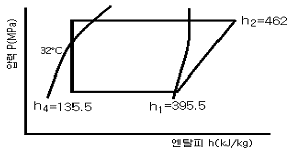
- ⓐ3.9, ⓑ3.0
- ⓐ3.9, ⓑ2.1
- ⓐ4.9, ⓑ3.8
- ⓐ4.9, ⓑ2.6
(정답률: 59%)
25. 축열 시스템의 종류가 아닌 것은?
- 가스축열 방식
- 수축열 방식
- 빙축열 방식
- 잠열축열 방식
(정답률: 56%)
26. 항공기 재료의 내한(耐寒)성능을 시험하기 위한 냉동 장치를 설치 할려고 한다. 가장 적합한 냉동기는?
- 왕복동식 냉동기
- 원심식 냉동기
- 전자식 냉동기
- 흡수식 냉동기
(정답률: 73%)
27. 물리에르 선도상에서 압력이 증대함에 따라 포화액선과 건조포화 증기선이 만나는 일치점을 무엇이라 하는가?
- 한계점
- 임계점
- 상사점
- 비등점
(정답률: 89%)
28. 다음 중 냉동방법의 종류로 틀린 것은?
- 얼음의 융해잠열 이용 방법
- 드라이아이스 승화열 이용방법
- 액체질소의 증발열 이용 방법
- 기계식 냉동기의 압축열 이용방법
(정답률: 71%)
29. 저온의 냉장실에서 운전 중 냉각기에 적상(성애)이 생길 경우 이것을 살수로 제상하고자 할 때 주의사항으로 틀린 것은?
- 냉각기용 송풍기는 정지후 살수 제상을 행한다
- 제상 수의 온도는 50 ~ 60℃정도의 물을 사용한다
- 살수하기 전에 냉각(증발)기로 유입되는 냉매액을 차단한다.
- 분사 노즐은 항상 깨끗이 청소한다.
(정답률: 80%)
30. 압축기의 구조에 관한 설명으로 틀린것은?
- 반밀폐형은 고정식이므로 분해가 곤란하다.
- 개방형에는 벨트 구독식과 직결 구동식이 있다.
- 밀폐형은 전동기와 압축기가 한 하우징속에 있다.
- 기통 배열에 따라 입형, 횡형, 다기통형으로 구분된다.
(정답률: 78%)
31. 증기압축 이론냉동사이클에 대한 설명으로 틀린 것은?
- 압축기에서의 압축과정은 단열 과정이다
- 응축기에서의 응축과정은 등압, 등엔탈피 과정이다.
- 증발기에서의 증발과정은 등압, 등온 과정이다.
- 팽창 밸브에서의 팽창과정은 교축 과정이다.
(정답률: 62%)
32. 냉매가 구비해야 할 조건으로 틀린 것은?
- 임계온도가 높고 응고온도가 낮을 것
- 같은 냉동능력에 대하여 소요동력이 적을것
- 전기절연성이 낮을 것
- 저온에서도 대기압 이상의 압력으로 증발하고 상온에서 비교적 저압으로 액화할것
(정답률: 76%)
33. 열에 대한 설명으로 틀린 것은?
- 열전도는 물질 내에서 열이 전달되는 것이기 때문에 공기 중에서는 열전도가 일어나지 않는다.
- 열이 온도차에 의하여 이동되는 현상을 열전달이라 한다.
- 고온 물체와 저온 물체 사이에서는 복사에 의해서도 열이 전달된다.
- 온도가 다른 유체가 고체벽을 사이에 두고 있을 때 온도가 높은 유체에서 온도가 낮은 유체로 열이 이동되는 현상을 열통과라고 한다.
(정답률: 77%)
34. 수산물의 단기 저장을 위한 냉각 방법으로 적합하지 않은 것은?
- 빙온 냉각
- 염수 냉각
- 송풍 냉각
- 침지 냉각
(정답률: 74%)
35. 2원냉동 사이클에서 중간열교환기인 캐스케이드 열교환기의 구성은 무엇으로 이루어져 있는가?
- 저온측 냉동기의 응축기와 고온측 냉동기의 증발기
- 저온측 냉동기의 증발기와 고온측 냉동기의 응축기
- 저온측 냉동기의 응축기와 고온측 냉동기의 응축기
- 저온측 냉동기의 증발기와 고온측 냉동기의 증발기
(정답률: 70%)
36. 흡수식냉동기의 구성품 중 왕복동 냉동기의 압축기와 같은 역할을 하는 것은?
- 발생기
- 증발기
- 응축기
- 순환펌프
(정답률: 73%)
37. 아래 조건을 갖는 수냉식 응축기의 전열면적(m2)는 얼마인가? (단, 응축기 입구의 냉매가스의 엔탈피는 430kcal/kg, 응축기 출구의 냉매액의 엔탈피는 145kcal/kg, 냉매 순환량은 150kg/h, 응축온도는 38℃, 냉각수 평균온도는 32℃, 응축기의 열관류율은 850 kcal/m2∙h∙℃ 이다.)
- 7.96
- 8.38
- 8.90
- 10.⑤
(정답률: 55%)
38. 어떤 냉동장치의 계기압력이 저압은 60 mmHg, 고압은 673kPa이였다면, 이 때의 압축비는 얼마인가?
- 5.8
- 6.0
- 7.4
- 8.3
(정답률: 28%)
39. 압축기 실린더 직경 110mm, 행정 80mm, 회전수 900rpm, 기통수가 8기통인 암모니아 냉동장치의 냉동능력(RT)는 얼마인가? (단, 냉동능력은
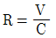
로 산출하며 여기서 R은 냉동능력(RT), V는 피스톤 토출량(m3/h), C는 정수로서 8.4이다.)- 39.1
- 47.7
- 85.3
- 234.0
(정답률: 37%)
40. 30냉동톤의 브라인 쿨러에서 입구온도가 –15℃일 때 브라인 유량이 매 분 0.6m3 이면 출구온도(℃)는 얼마인가? (단, 브라인의 비중은 1.27, 비열은 0.669 kcal/kg·℃이고, 1냉동톤은 3320kcal/h 이다.)
- -11.7℃
- -15.4℃
- -20.4℃
- -18.3℃
(정답률: 34%)
3과목: 배관일반
41. 주철관의 소켓이음 시 코킹작업을 하는 주된 목적으로 가장 적합한 것은?
- 누수 방지
- 경도 방지
- 인장강도 증가
- 내진성 증가
(정답률: 83%)
42. 보온재에 관한 설명으로 틀린 것은?
- 무기질 보온재료는 함면, 유리면 등이 사용된다
- 탄산마그네슘은 250℃ 이하의 파이프 보온용으로 사용된다.
- 광명단은 밀차력이 강한 유기질 보온재다.
- 우모펠트는 곡면시공에 매우 편리하다.
(정답률: 70%)
43. 염화비닐관 이음법의 종류가 아닌 것은?
- 플랜지 이음
- 인서트 이음
- 테이퍼 코어 이음
- 열간 이음
(정답률: 49%)
44. 배관의 지지 목적이 아닌 것은?
- 배관의 중량지지 및 고정
- 신축의 제한 지지
- 진동 및 충격 방지
- 부식 방지
(정답률: 83%)
45. 옥상탱크식 급수방식의 배관계통의 순서로 옳은 것은?
- 저수탱크 → 양수펌프 → 옥상탱크 → 양수관 → 급수관 → 수도꼭지
- 저수탱크 → 양수관 → 양수펌프 → 급수관 → 옥상탱크 → 수도꼭지
- 저수탱크 → 양수관 → 급수관 → 양수펌프 → 옥상탱크 → 수도꼭지
- 저수탱크 → 양수펌프 → 양수관 → 옥상탱크 → 급수관 → 수도꼭지
(정답률: 73%)
46. 트랩의 봉수 파괴 원인이 아닌 것은?
- 증발작용
- 모세관작용
- 사이펀작용
- 배수작용
(정답률: 68%)
47. 가스용접에서 아세틸렌과 산소의 비가 1 : 0.85~0.95인 불꽃은 무슨 불꽃인가?
- 탄화불꽃
- 기화불꽃
- 산화불꽃
- 표준불꽃
(정답률: 69%)
48. 배관의 도중에 설치하여 유체 속에 혼입된 토사나 이물질 등을 제거하기 위해 설치하는 배관 부품은?
- 트랩
- 유니언
- 스트레이너
- 플랜지
(정답률: 80%)
49. 냉매배관 중 토출관을 의미하는 것은?
- 압축기에서 응축기까지의 배관
- 응축기에서 팽창밸브까지의 배관
- 증발기에서 압축기까지의 배관
- 응축기에서 증발기까지의 배관
(정답률: 59%)
50. 급수설비에서 수격장용 방지를 위하여 설치하는 것은?
- 에어챔버(air chamber)
- 앵글밸브(angle valve)
- 서포트(support)
- 볼 탭(ball tap)
(정답률: 81%)
51. 급탕배관에 대한 설명으로 틀린 것은?
- 배관이 길 경우에는 필요한 곳에 공기빼기 밸브를 설치한다.
- 벽 관동부분 배관에는 슬리브를 끼운다.
- 상향식 배관에서는 공급관을 앞내림 구매로 한다.
- 배관 중간에 신축이음을 설치한다.
(정답률: 72%)
52. 호칭지름 20A의 관을 그림과 같이 나사 이음할 때 중심 간의 길이가 200mm라 하면 강관의 실제 소요되는 절단길이(mm)는? (단, 이음쇠에 중심에서 단면까지의 길이는 32mm, 나사가 물리는 최소의 길이는 13mm이다.)
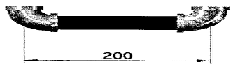
- 136
- 148
- 162
- 200
(정답률: 72%)
53. 펌프 주위의 배관도 이다. 각 부품의 명칭으로 틀린 것은?
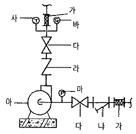
- 나 : 스트레이너
- 가 : 플랙시블조인트
- 라 : 글로브 밸브
- 사 : 온도계
(정답률: 82%)
54. 급배수 배관 시험 방법중 물 대신 압축공기를 관 속에 압입하여 이음매에서 공기가 새는 것을 조사하는 방식은?
- 수압시험
- 기압시험
- 진공시험
- 통기시험
(정답률: 77%)
55. 동관접합 방법의 종류가 아닌 것은??
- 빅토리접합
- 플레어 접합
- 플랜지접합
- 납땜 접합
(정답률: 71%)
56. 저압증기 난방 장치에서 증기관과 환수관 사이에 설치하는 균형관은 표준 수면에서 몇 mm 아래에 설치하는가?
- 20 mm
- 50 mm
- 80 mm
- 100 mm
(정답률: 74%)
57. 급탕배관에의 구배에 대한 관한 설명으로 옳은 것은?
- 중력순환식은 1/250 이상의 구배를 준다
- 강제순환식은 구배를 주지 않는다.
- 하향식 공급 방식에서는 급탕관 및 복귀관은 모두 선하향 구배로 한다.
- 상향공급식 배관의 반탕관은 상향구배로 한다.
(정답률: 67%)
58. 다음 중 온도에 따른 팽창 및 수축이 가장 큰 배관재료는?
- 강관
- 동관
- 염화비닐관
- 콘크리트관
(정답률: 65%)
59. 중앙식 급탕설비에서 직접 가열식 방법에 대한 설명으로 옳은 것은?
- 열 효율상으로는 경제적이지만 보일러 내부에 스케일이 생길 우려가 크다.
- 탱크 속에 직접 증기를 분사하여 물을 가열하는 방식이다.
- 탱크는 저장과 가열을 동시에 하므로 탱크히터 또는 스토리지 탱크로 부른다
- 가열 코일이 필요하다
(정답률: 59%)
60. 고층 건물이나 기구수가 많은 건물에서 입상관까지의 거리가 긴 경우, 루프통기의 효과를 높이기 위해 설치된 통기관은?
- 도피 통기관
- 반송 통기관
- 공용 통기관
- 신정 통기관
(정답률: 64%)
4과목: 전기제어공학
61. 그림과 같은 피드백회로 전달함수
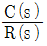
는?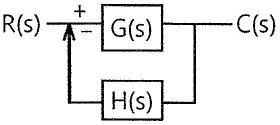
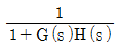
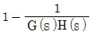
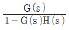
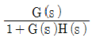
(정답률: 62%)
62. 위치 감지용으로 적합한 장치는?
- 전위차계
- 회전자기부호기
- 스트레인게이지
- 마이크로폰
(정답률: 72%)
63. 제어계에서 동작신호를 조작량으로 변화시키는 것은?
- 제어량
- 제어요소
- 궤한요소
- 기준압력요소.
(정답률: 64%)
64. 다음 블록선도를 수식으로 표현한 것 중 옳은 것은?
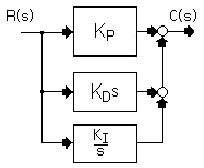
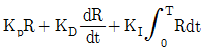
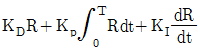
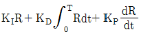
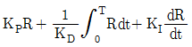
(정답률: 54%)
65. 그림과 같은 Y결선 회로와 등가인 △결선 회로의 Zab, Zbc, Zca 값은?
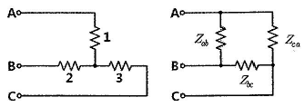
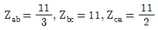
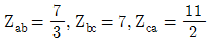
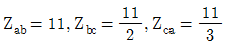
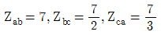
(정답률: 64%)
66. 자동제어의 기본 요소로서 전기식 조작기기에 속하는 것은?
- 다이어프램
- 벨로우즈
- 펄스 전동기
- 파일럿 밸브
(정답률: 66%)
67. 직류전동기의 속도제어 방법이 아닌 것은?
- 전압제어
- 계자제어
- 저항제어
- 슬립제어
(정답률: 64%)
68. 부궤한(negative feedback) 증폭기의 장점은?
- 안정도의 증가
- 증폭도의 증가
- 전력의 절약
- 능률의 증대
(정답률: 63%)
69. 그림과 같은 신호흐름선도에서 C/R의 값은?
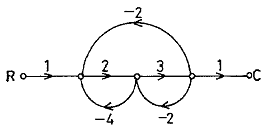
- 6/21
- -6/21
- 6/27
- -6/27
(정답률: 59%)
70. 피드백 제어계의 안정도와 직접적인 관련이 없는 것은?
- 이득 여유
- 위상 여유
- 주파수 특성
- 제동비
(정답률: 65%)
71. 저항 R1과 R2가 병렬로 접속되어 있을 때, R1에 흐르는 전류가 3A이면 R2에 흐르는 전류는 몇 A 인가?(문제 오류로 전항 정답 처리된 문제입니다. 여기서는 가답안인 2번을 누르면 정답 처리 됩니다.)
- 1.0
- 1.5
- 2.0
- 2.5
(정답률: 73%)
72. 다음 분류기의 배율은? (단, Rs: 분류기의 저항, Ra : 전류계의 저항)
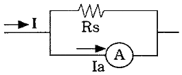
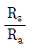
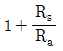
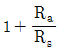
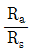
(정답률: 50%)
73. 그림과 같은 제어에 해당하는 것은?
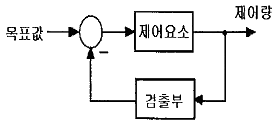
- 개방 제어
- 개루푸제어
- 시퀀스 제어
- 폐루푸 제어
(정답률: 69%)
74. 그림과 같이 교류의 전압을 직류용 가동코일형 계기를 사용하여 측정하였다. 전압계의 눈금은 몇 V인가? (단, 교류전압 R의 값은 충분히 크다고 한다.)
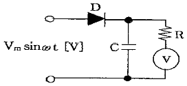
- Vm
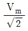
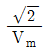
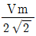
(정답률: 53%)
75. 평행위치에서 목표 값과 현제 수위와의 차이를 잔류 편차(offset)라 한다. 다음 중 잔류 편차가 있는 제어계는?(문제 오류로 1, 2번이 정답 처리된 문제입니다. 여기서는 가답안인 2번을 누르면 정답 처리 됩니다.)
- 비례 동작(P동작)
- 비례 미분 동작(PD동작)
- 비례 적분 동작(PI동작)
- 비례 적분 미분 동작(PID동작)
(정답률: 65%)
76. 자동제어계에서 과도응답 중 지연시간을 옳게 정의한 것은?
- 목표 값의 50%에 도달하는 시간
- 목표 값이 허용오차 범위에 들어갈 때까지의 시간
- 최대 오버슈트가 일어나는 시간
- 목표값의 10 ~ 90%까지 도달하는 시간
(정답률: 58%)
77. 제어량이 온도, 압력, 유량, 액위, 농도 등과 같은 일반 공업량일 때의 제어는?
- 추종제어
- 시퀀스제어
- 프로그래밍 제어
- 프로세스제어
(정답률: 71%)
78. 어떤 도체의 단면을 1시간에 7200C의 전기량이 이동했다고 하면 전류는 몇 A인가?
- 1
- 2
- 3
- 4
(정답률: 75%)
79. 어떤 계의 임펄스 응답이 e-2t이다. 이 제어계의 전달함수 G(s)는?
- 1/s
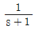
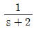
- s+2
(정답률: 62%)
80. 시퀀스 제어에 관한 설명 중 틀린 것은?
- 시간지연요소가 사용된다.
- 조합 논리회로로도 사용된다.
- 기계적 계전기 접검이 사용된다.
- 전체 시스템의 접점들이 일시에 동작한다.
(정답률: 80%)